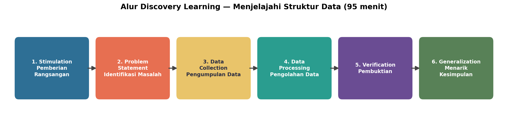
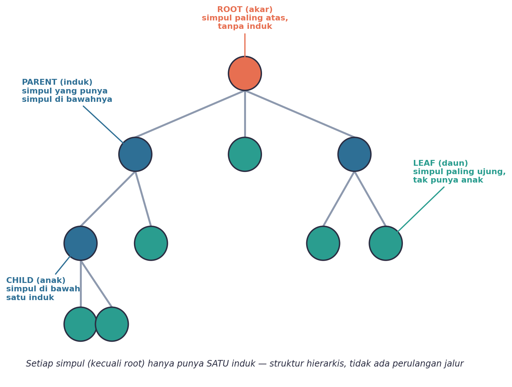
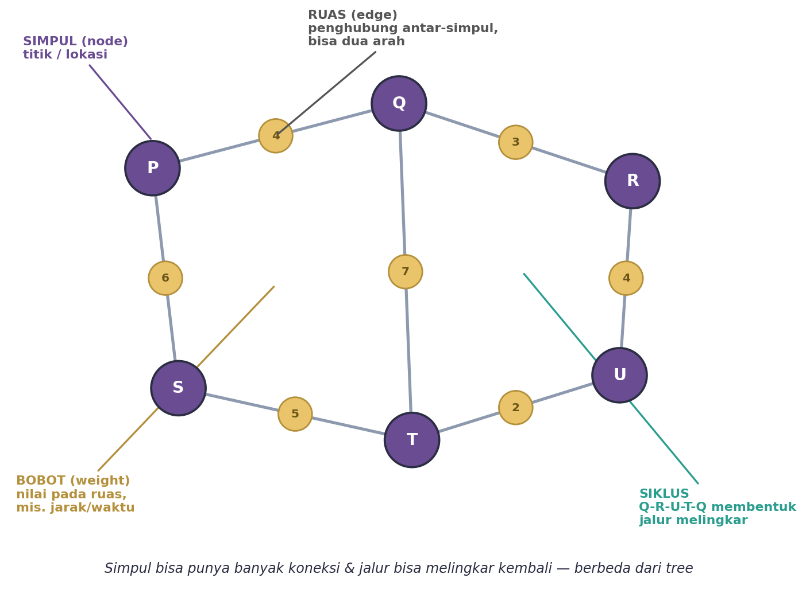
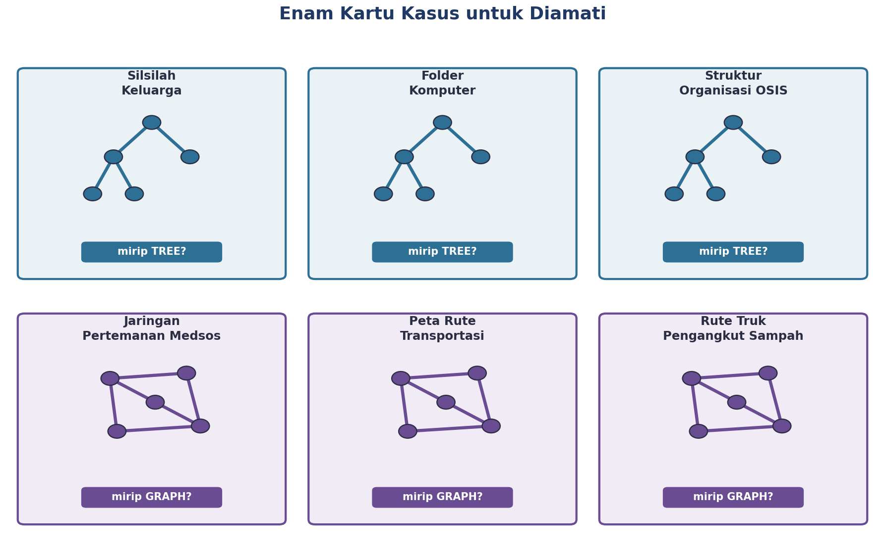
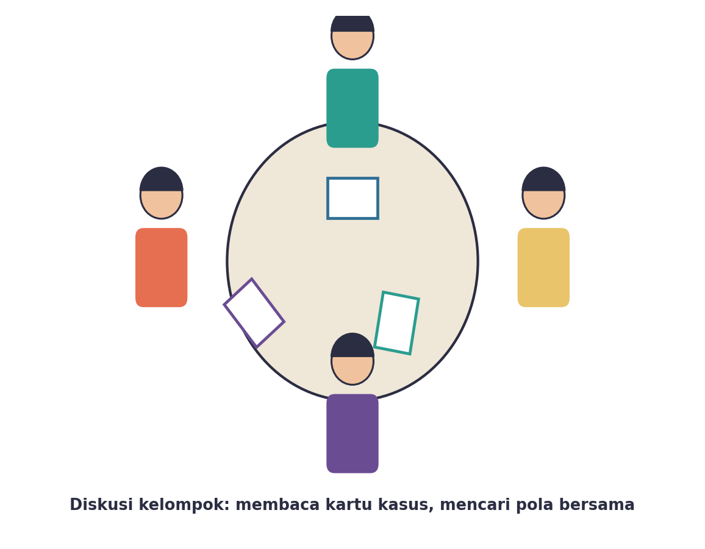
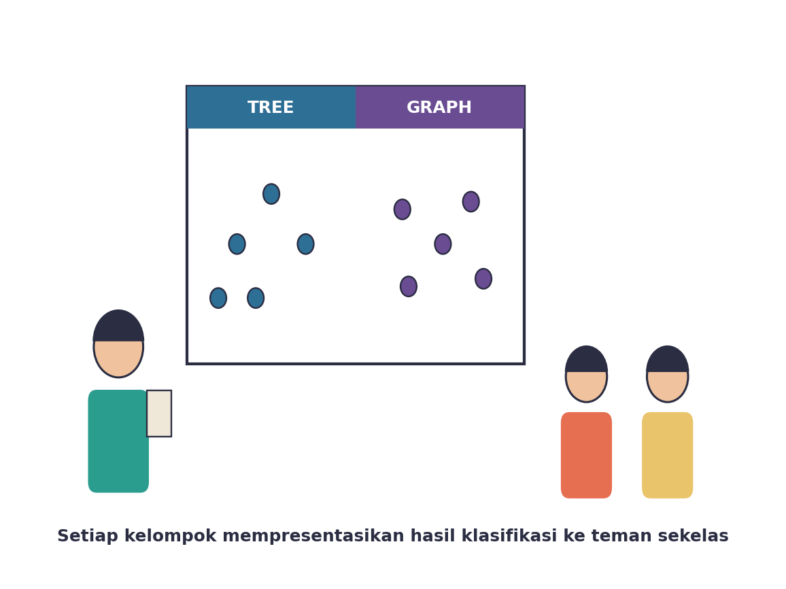

Yuk, Intip Apa yang Bakal Kamu Kuasai Hari Ini
Setelah pertemuan ini, kamu bakal bisa:
- menjelaskan apa itu struktur data dengan bahasamu sendiri;
- mengenali ciri-ciri struktur data TREE dan istilah-istilah pentingnya (root, parent, child, leaf);
- mengenali ciri-ciri struktur data GRAPH dan istilah-istilah pentingnya (node, edge, weight);
- mengklasifikasikan contoh nyata di sekitarmu, mana yang mirip tree dan mana yang mirip graph.
Kata Kunci
Emang Kenapa Sih Data Perlu Punya “Struktur”?
Bayangin kamu punya HP dengan ribuan foto, tapi semuanya numpuk jadi satu folder tanpa nama, tanpa album, tanpa urutan. Nyari satu foto ulang tahun tahun lalu bisa jadi mimpi buruk, kan?
Nah, itulah kenapa data butuh struktur — cara data disusun dan dihubungkan satu sama lain supaya gampang dicari, diakses, dan diolah. Komputer (dan otak kita juga, sebenarnya) jauh lebih cepat kerja kalau data punya pola yang jelas, bukan berantakan begitu aja.
Ternyata, dari sekian banyak cara menyusun data, ada dua pola dasar yang paling sering muncul di kehidupan sehari-hari: TREE (pohon) dan GRAPH (jejaring). Yuk, kita bongkar satu-satu!
Hari ini kamu nggak akan langsung dikasih definisi tree dan graph dari guru. Kamu justru akan mengamati beberapa contoh dulu, lalu menemukan sendiri pola dan definisinya bareng kelompok. Seru, kan? Ini namanya belajar lewat penemuan (discovery learning).
Kenalan Dulu, Yuk, Sama Kegiatan Hari Ini
Ada enam tahap seru yang bakal kamu lewati bareng kelompok hari ini — mulai dari mengamati, berdiskusi, sampai menyimpulkan sendiri apa itu tree dan graph.

Kenalan Sama TREE (Pohon)
Coba gambarin silsilah keluargamu: dari kakek-nenek, ke orang tua, ke kamu dan saudara-saudaramu. Bentuknya kira-kira kayak pohon yang dibalik — akarnya di atas, cabangnya makin ke bawah makin banyak.

Ini dia istilah-istilah yang perlu kamu tahu:
Simpul paling atas, nggak punya induk sama sekali. Contoh: kakek-nenek paling atas di silsilah keluarga.
Simpul yang punya simpul lain di bawahnya.
Simpul yang berada langsung di bawah satu induk tertentu.
Simpul paling ujung, nggak punya anak lagi di bawahnya.
Ciri paling khas dari tree: setiap simpul (kecuali root) cuma punya SATU induk. Nggak mungkin kamu punya dua folder induk buat satu file yang sama, kan? Itulah kenapa struktur folder di komputer itu pola tree.
Silsilah keluarga, struktur folder di komputer/HP, dan struktur organisasi OSIS di sekolahmu — semuanya punya pola yang sama: hierarkis, bercabang ke bawah, dan setiap “anggota” cuma punya satu “atasan” langsung.
Kenalan Sama GRAPH (Jejaring)
Sekarang coba pikirin pertemanan di media sosial. Kamu bisa berteman dengan puluhan bahkan ratusan orang sekaligus, dan teman-temanmu juga berteman satu sama lain. Nggak ada yang namanya “induk” di sini — semuanya saling terhubung, bahkan bisa muter balik ke kamu lagi.

Ini dia istilah-istilah pentingnya:
Titik atau lokasi dalam graph, misalnya satu akun media sosial atau satu kota.
Penghubung antara dua simpul, bisa dua arah sekaligus.
Nilai yang melekat pada suatu ruas, misalnya jarak antar-kota atau waktu tempuh.
Jalur yang bisa berputar kembali ke simpul yang sama.
Beda banget sama tree, kan? Di graph, satu simpul bisa punya banyak banget koneksi, dan jalurnya bisa melingkar kembali. Makanya peta rute transportasi, rute truk sampah antar-lokasi, dan jaringan pertemanan medsos semuanya pola graph — semua serba fleksibel dan saling terhubung.
Jaringan pertemanan media sosial, peta rute transportasi antarkota, dan rute truk pengangkut sampah antar-lokasi — semuanya punya banyak koneksi yang fleksibel, dan seringkali punya “bobot” seperti jarak atau waktu tempuh.
Aktivitas Seru: Amati dan Klasifikasikan!
Sekarang giliran kamu beraksi! Bareng kelompokmu, kamu akan dapat enam kartu kasus berisi contoh-contoh nyata. Tugas kelompokmu: amati baik-baik, terus kelompokkan mana yang mirip tree dan mana yang mirip graph.

Waktu mengamati, coba jawab pertanyaan-pertanyaan ini buat tiap kartu:
- Apakah tiap “elemen” di kartu ini cuma punya satu “induk”, atau bisa punya banyak koneksi sekaligus?
- Apakah ada jalur yang bisa berputar balik ke elemen yang sama (siklus)?
- Apakah hubungannya searah dari atas ke bawah, atau bisa dua arah bebas ke mana saja?

Setelah semua kartu diamati, kelompokmu akan menuangkan hasil klasifikasi ke poster sederhana — kartu mana yang masuk kelompok tree, kartu mana yang masuk kelompok graph, lengkap dengan alasannya.
Waktunya Presentasi Hasil Klasifikasi

Perwakilan kelompok akan memaparkan hasil klasifikasi secara singkat ke teman sekelas. Setelah itu, gurumu akan menunjukkan diagram anatomi tree dan graph yang resmi, dan kalian bisa mencocokkan: apakah hasil klasifikasi dan istilah yang kelompokmu pakai sudah pas?
Jangan khawatir kalau ada yang belum pas — justru di sinilah letak serunya belajar lewat penemuan: kamu boleh mengoreksi pemahamanmu sendiri sambil dibimbing guru.
Bocoran Tips Biar Makin Ngerti
- Fokus dulu ke pertanyaan “berapa banyak induk yang dimiliki tiap elemen” — ini cara paling gampang buat bedain tree dan graph.
- Kalau bingung nentuin satu kartu masuk tree atau graph, coba bayangin: bisa nggak jalurnya balik lagi ke elemen yang sama? Kalau bisa, itu tanda-tanda graph.
- Jangan cuma hafalin definisi tree dan graph dari buku — coba rumuskan dengan kata-katamu sendiri, biar beneran nempel di kepala.
Tree itu selalu bagian khusus dari graph juga, lho — cuma tree itu graph yang lebih “rapi”: nggak ada siklus, dan tiap simpul cuma punya satu induk. Nanti di pertemuan berikutnya kamu akan belajar lebih jauh soal ini!
Rangkuman Singkat
- Struktur data adalah cara mengorganisasikan dan menghubungkan data agar mudah diakses dan diolah.
- Tree adalah struktur data hierarkis: tiap simpul (kecuali root) cuma punya satu induk, jadi nggak ada jalur yang berputar balik. Contoh: silsilah keluarga, folder komputer, struktur organisasi.
- Graph adalah struktur data berbentuk jejaring: simpul bisa punya banyak koneksi sekaligus, dan jalurnya bisa melingkar. Contoh: pertemanan medsos, peta rute transportasi, rute truk sampah.
- Istilah penting tree: root, parent, child, leaf. Istilah penting graph: simpul (node), ruas (edge), bobot (weight), siklus.
Cek Dulu, Udah Paham Belum?
Sebelum pertemuan ini ditutup, coba jawab dulu pertanyaan berikut sendirian.
Kamus Kecil Istilah Penting
- Struktur Data
- cara mengorganisasikan dan menyimpan data agar mudah diakses dan diolah, terutama oleh komputer.
- Tree (pohon)
- struktur data hierarkis di mana setiap simpul (kecuali root) hanya memiliki satu induk.
- Root (akar)
- simpul paling atas dalam tree, tidak memiliki induk.
- Parent & Child
- hubungan antara simpul yang berada langsung di atas/bawah satu sama lain (induk dan anak).
- Leaf (daun)
- simpul paling ujung dalam tree, tidak memiliki anak.
- Graph
- struktur data berbentuk jejaring, di mana simpul bisa memiliki banyak koneksi dan jalurnya bisa melingkar kembali.
- Simpul & Ruas
- titik (node) dan penghubung antar-titik (edge) dalam graph.
- Bobot (weight)
- nilai yang melekat pada suatu ruas dalam graph, misalnya jarak atau waktu tempuh.
- Siklus
- jalur dalam graph yang bisa berputar kembali ke simpul yang sama.